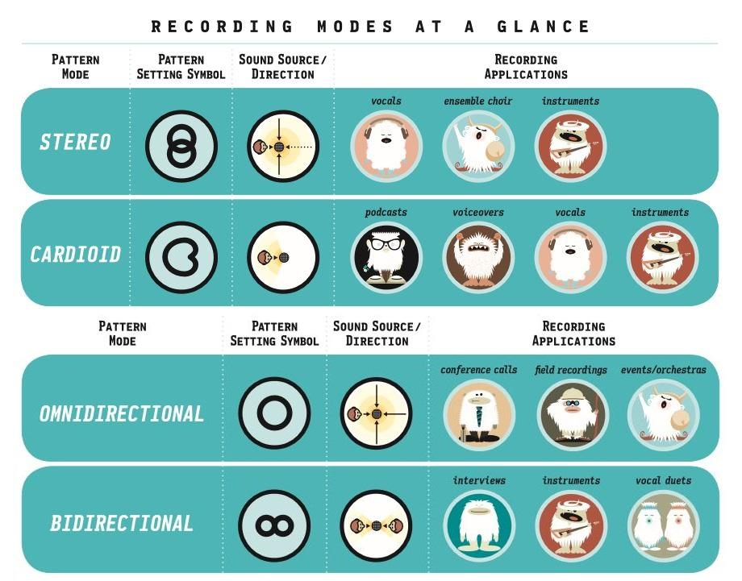

4
settings.
Infinite
possibilities.
The Yeti is one of the most advanced and versatile multi-pattern USB microphones available anywhere. Combining three capsules and four different pattern settings, the Yeti is the ultimate tool for creating amazing recordings, directly to your computer. Delivering exceptional sound and performance, the Yeti can capture anything with a clarity & ease unheard of in a USB microphone.
